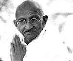
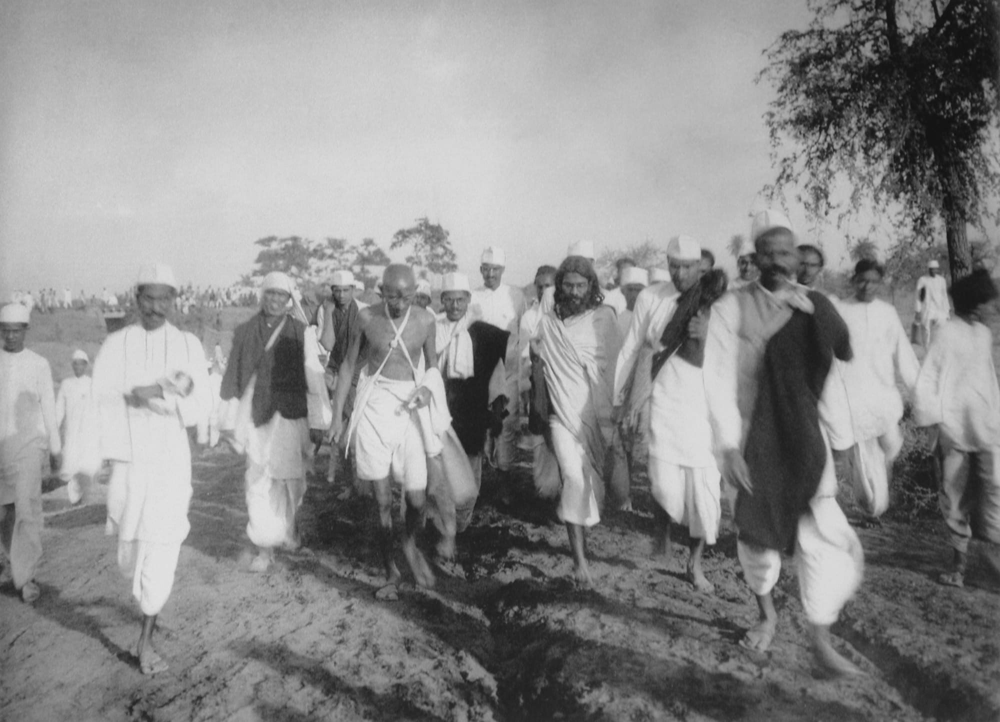
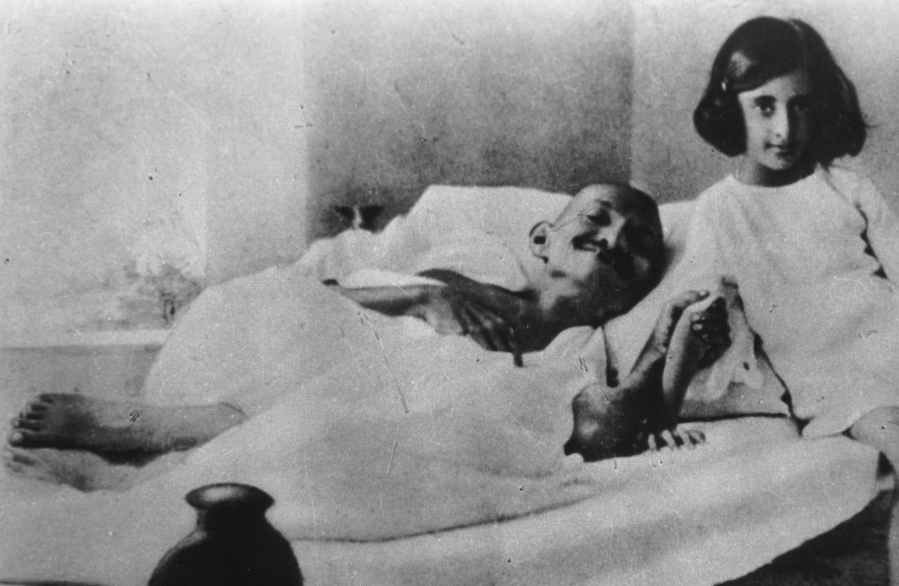
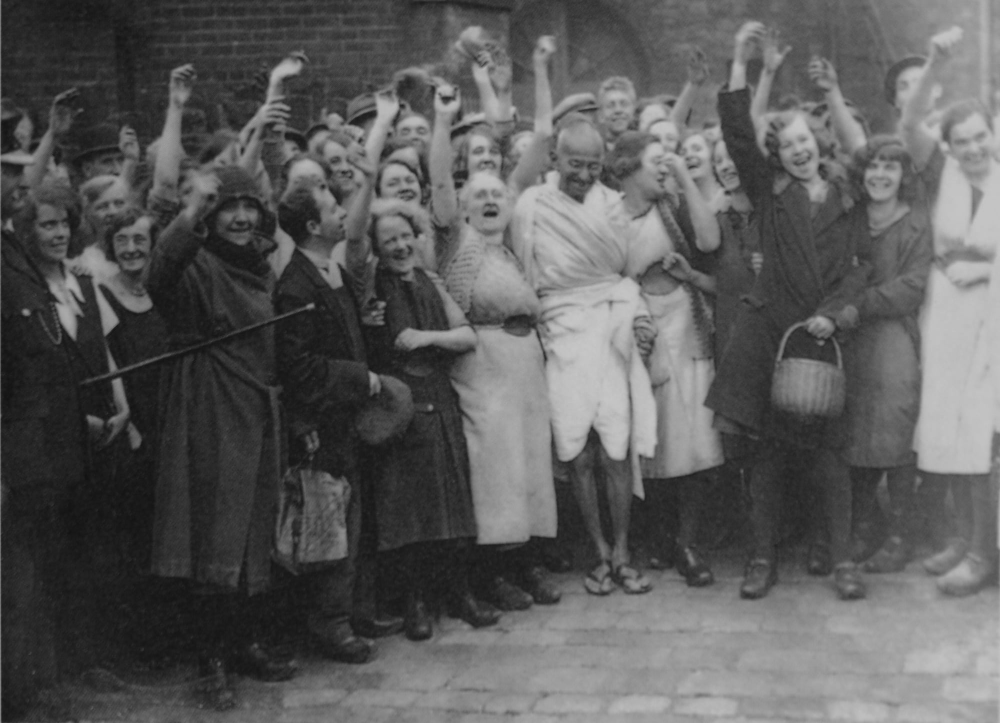
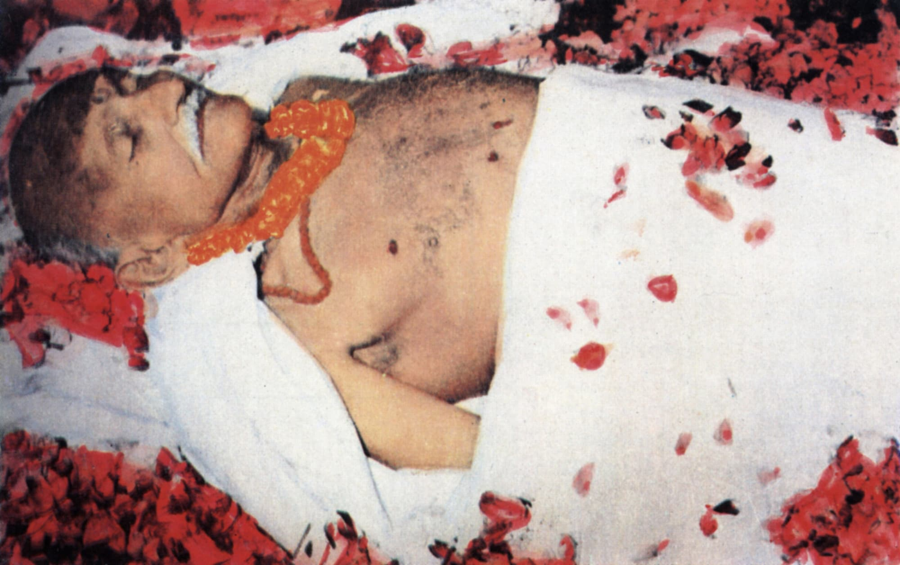

MAHATMA GANDHI-BIOGRAPHY
(1883–1944)
Mohandas Karamchand Gandhi was an Indian lawyer, anti-colonial nationalist, and political ethicist, who employed nonviolent resistance to lead the successful campaign for India's independence from British Rule, and in turn inspired movements for civil rights and freedom across the world.
Born:2 October 1869,
Full name: Mohandas Karamchand Gandhi
Assassinated: 30 January 1948,
New Delhi
Spouse: Kasturba Gandhi (m. 1883–1944)
Gandhi was appalled by the discrimination he experienced as an Indian immigrant in South Africa. When a European magistrate in Durban asked him to take off his turban, he refused and left the courtroom. On a train voyage to Pretoria, he was thrown out of a first-class railway compartment and beaten up by a white stagecoach driver after refusing to give up his seat for a European passenger. That train journey served as a turning point for Gandhi, and he soon began developing and teaching the concept of satyagraha (“truth and firmness”), or passive resistance, as a way of non-cooperation with authorities.

The Birth of Passive Resistance
In 1906, after the Transvaal government passed an ordinance regarding the registration of its Indian population, Gandhi led a campaign of civil disobedience that would last for the next eight years. During its final phase in 1913, hundreds of Indians living in South Africa, including women, went to jail, and thousands of striking Indian miners were imprisoned, flogged and even shot. Finally, under pressure from the British and Indian governments, the government of South Africa accepted a compromise negotiated by Gandhi and General Jan Christian Smuts, which included important concessions such as the recognition of Indian marriages and the abolition of the existing poll tax for Indians.
In July 1914, Gandhi left South Africa to return to India. He supported the British war effort in World War I but remained critical of colonial authorities for measures he felt were unjust. In 1919, Gandhi launched an organized campaign of passive resistance in response to Parliament’s passage of the Rowlatt Acts, which gave colonial authorities emergency powers to suppress subversive activities. He backed off after violence broke out–including the massacre by British-led soldiers of some 400 Indians attending a meeting at Amritsar–but only temporarily, and by 1920 he was the most visible figure in the movement for Indian independence.
Leader of a Movement
As part of his nonviolent non-cooperation campaign for home rule, Gandhi stressed the importance of economic independence for India. He particularly advocated the manufacture of khaddar, or homespun cloth, in order to replace imported textiles from Britain. Gandhi’s eloquence and embrace of an ascetic lifestyle based on prayer, fasting and meditation earned him the reverence of his followers, who called him Mahatma (Sanskrit for “the great-souled one”). Invested with all the authority of the Indian National Congress (INC or Congress Party), Gandhi turned the independence movement into a massive organization, leading boycotts of British manufacturers and institutions representing British influence in India, including legislatures and schools.
After sporadic violence broke out, Gandhi announced the end of the resistance movement, to the dismay of his followers. British authorities arrested Gandhi in March 1922 and tried him for sedition; he was sentenced to six years in prison but was released in 1924 after undergoing an operation for appendicitis. He refrained from active participation in politics for the next several years, but in 1930 launched a new civil disobedience campaign against the colonial government’s tax on salt, which greatly affected Indian’s poorest citizens.
A Divided Movement
In 1931, after British authorities made some concessions, Gandhi again called off the resistance movement and agreed to represent the Congress Party at the Round Table Conference in London. Meanwhile, some of his party colleagues–particularly Mohammed Ali Jinnah, a leading voice for India’s Muslim minority–grew frustrated with Gandhi’s methods, and what they saw as a lack of concrete gains. Arrested upon his return by a newly aggressive colonial government, Gandhi began a series of hunger strikes in protest of the treatment of India’s so-called “untouchables” (the poorer classes), whom he renamed Harijans, or “children of God.” The fasting caused an uproar among his followers and resulted in swift reforms by the Hindu community and the government.
In 1934, Gandhi announced his retirement from politics in, as well as his resignation from the Congress Party, in order to concentrate his efforts on working within rural communities. Drawn back into the political fray by the outbreak of World War II, Gandhi again took control of the INC, demanding a British withdrawal from India in return for Indian cooperation with the war effort. Instead, British forces imprisoned the entire Congress leadership, bringing Anglo-Indian relations to a new low point.
Partition and Death of Gandhi
After the Labor Party took power in Britain in 1947, negotiations over Indian home rule began between the British, the Congress Party and the Muslim League (now led by Jinnah). Later that year, Britain granted India its independence but split the country into two dominions: India and Pakistan. Gandhi strongly opposed Partition, but he agreed to it in hopes that after independence Hindus and Muslims could achieve peace internally. Amid the massive riots that followed Partition, Gandhi urged Hindus and Muslims to live peacefully together, and undertook a hunger strike until riots in Calcutta ceased.
n January 1948, Gandhi carried out yet another fast, this time to bring about peace in the city of Delhi. On January 30, 12 days after that fast ended, Gandhi was on his way to an evening prayer meeting in Delhi when he was shot to death by Nathuram Godse, a Hindu fanatic enraged by Mahatma’s efforts to negotiate with Jinnah and other Muslims. The next day, roughly 1 million people followed the procession as Gandhi’s body was carried in state through the streets of the city and cremated on the banks of the holy Jumna River.
PHOTO GALLERIES GANDHI

GANDHI-DURING-THE-SALT-MARCH

GANDHI-AND-INDIRA-1924

GANDHI-DARWEN

MOHANDAS KARAMCHAND GANDHI (1869-1948) KNOWN AS MAHATMA GREAT SOUL INDIAN NATIONALIST GANDHI S BODY STREWN WITH FLOWERS COLOUR